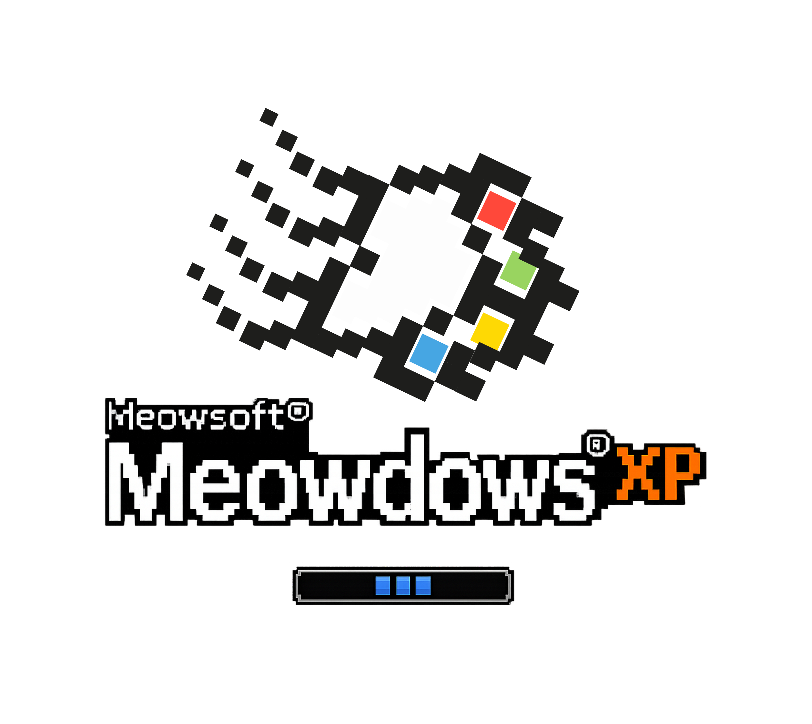

no.01 — 깜냥이
어둠 속의 손전등
핵심 게임 경험 · 손이 손전등이 되어 어둠 속 고양이를 비추고 주먹으로 잡기
손바닥을 카메라에 보여주면 빛이 켜져요. 어둠 속 깜빡이는 노란 눈을 찾아 비추고, 주먹을 꼭 쥐어 깜냥이를 잡아주세요.
포획
손바닥을 펴서 어둠을 비춰요

손동작으로 만나는 인터랙티브 고양이 도감
핵심 게임 경험 · 손이 손전등이 되어 어둠 속 고양이를 비추고 주먹으로 잡기
손바닥을 카메라에 보여주면 빛이 켜져요. 어둠 속 깜빡이는 노란 눈을 찾아 비추고, 주먹을 꼭 쥐어 깜냥이를 잡아주세요.